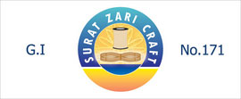

Alluring and enhanting in appeal the glittering royal man-made silver &. golden fibre ' Jari' has equally romantic history and origin buried in obscurity
Ut enim ad minim veniam, quis nostrud exercitation ullamco laboris nisi ut
Duis aute irure dolor in reprehenderit in voluptate velit esse cillum dolore
What is G.I Tag ?
Geographical Indication for Zari: Preserving Tradition, Ensuring Quality
Introduction to Geographical Indication (GI)
Geographical Indication (GI) is a form of intellectual property protection that recognizes the unique qualities, reputation, and characteristics of products originating from a specific geographical area. It serves to protect traditional knowledge, preserve cultural heritage, and ensure that consumers can trust the authenticity of products associated with a particular region.
GI for Zari: Celebrating Craftsmanship and Heritage
Zari, the exquisite metallic thread used in traditional embroidery worldwide across various cultures, holds significant cultural value and historical roots spanning different geographic regions. The application for Geographical Indication for zari aims to acknowledge and protect the unique qualities and traditional methods associated with zari production in a designated area.
Benefits of Geographical Indication for Zari
1. Preserving Craftsmanship: GI ensures the continuation of traditional weaving and embroidery techniques, enriching the cultural fabric of the region.
2. Quality Assurance: Zari with GI adheres to rigorous quality standards, assuring consumers of authenticity and excellence.
3. Market Recognition: The GI label elevates zari's market value, attracting consumers seeking authentic and unique products.
4. Economic Development: GI contributes to economic development by promoting local industries, creating jobs, and fostering investment.
5. Legal Safeguard: GI protects against imitation and misuse, allowing only genuine products from the designated region to bear the coveted label.
The Surat Jari Manufacturers Association is the authorized proprietor of Surat Zari Craft G.I. No. 171, and our members are authorized users under Part-B.
Surat Zari Craft logo is a recognized benchmark for the consumer and also serves as an additional quality assurance tool for the manufacturer of Saree, Dhoti, Dress Materials, Mundu Sets, etc. Surat Zari Craft Logo certifies that the Imitation Zari Thread contains more than 10 gms Silver per 1 KG copper wire used.

ஜி.ஐ டேக் என்றால் என்ன?
ஜாரிக்கான புவியியல் குறியீடு: பாரம்பரியத்தைப் பாதுகாத்தல், தரத்தை உறுதி செய்தல்
புவியியல் குறியீடு (ஜிஐ) அறிமுகம்
புவியியல் குறியீடானது (GI) என்பது ஒரு குறிப்பிட்ட புவியியல் பகுதியிலிருந்து உற்பத்தி செய்யப்படும் பொருட்களின் தனித்துவமான குணங்கள், நற்பெயர் மற்றும் பண்புகளை அங்கீகரிக்கும் அறிவுசார் சொத்து பாதுகாப்பின் ஒரு வடிவமாகும். இது பாரம்பரிய அறிவைப் பாதுகாக்கவும், கலாச்சார பாரம்பரியத்தைப் பாதுகாக்கவும், ஒரு குறிப்பிட்ட பிராந்தியத்துடன் தொடர்புடைய பொருட்களின் நம்பகத்தன்மையை நுகர்வோர் நம்புவதை உறுதிப்படுத்தவும் உதவுகிறது.
ஜாரிக்கான ஜிஐ: கைவினைத்திறன் மற்றும் பாரம்பரியத்தைக் கொண்டாடுதல்
பல்வேறு கலாச்சாரங்களில் உலகளவில் பாரம்பரிய எம்பிராய்டரியில் பயன்படுத்தப்படும் நேர்த்தியான உலோக நூல் ஜாரி, பல்வேறு புவியியல் பகுதிகளில் பரவியிருக்கும் குறிப்பிடத்தக்க கலாச்சார மதிப்பு மற்றும் வரலாற்று வேர்களைக் கொண்டுள்ளது. ஜாரிக்கான புவியியல் குறிப்பிற்கான விண்ணப்பமானது, நியமிக்கப்பட்ட பகுதியில் ஜரி உற்பத்தியுடன் தொடர்புடைய தனித்துவமான குணங்கள் மற்றும் பாரம்பரிய முறைகளை அங்கீகரித்து பாதுகாப்பதை நோக்கமாகக் கொண்டுள்ளது.
ஜாரிக்கான புவியியல் குறிப்பின் நன்மைகள்
1. கைவினைத்திறனைப் பாதுகாத்தல்: பாரம்பரிய நெசவு மற்றும் எம்பிராய்டரி நுட்பங்களின் தொடர்ச்சியை GI உறுதிசெய்கிறது, பிராந்தியத்தின் கலாச்சாரத் துணியை வளப்படுத்துகிறது.
2. தர உத்தரவாதம்: GI உடன் Zari கடுமையான தரத் தரங்களை கடைபிடிக்கிறது, இது நுகர்வோருக்கு நம்பகத்தன்மை மற்றும் சிறப்பை உறுதி செய்கிறது.
3. சந்தை அங்கீகாரம்: ஜிஐ லேபிள், ஜாரியின் சந்தை மதிப்பை உயர்த்தி, உண்மையான மற்றும் தனித்துவமான தயாரிப்புகளைத் தேடும் நுகர்வோரை ஈர்க்கிறது.
4. பொருளாதார வளர்ச்சி: உள்ளூர் தொழில்களை ஊக்குவிப்பதன் மூலமும், வேலைகளை உருவாக்குவதன் மூலமும், முதலீட்டை ஊக்குவிப்பதன் மூலமும் பொருளாதார வளர்ச்சிக்கு ஜிஐ பங்களிக்கிறது.
5. சட்டப் பாதுகாப்பு: சாயல் மற்றும் தவறான பயன்பாட்டிற்கு எதிராக GI பாதுகாக்கிறது, நியமிக்கப்பட்ட பகுதியில் இருந்து உண்மையான தயாரிப்புகளை மட்டுமே விரும்பத்தக்க லேபிளை தாங்க அனுமதிக்கிறது.
சூரத் ஜரி உற்பத்தியாளர்கள் சங்கம் சூரத் ஜரி கிராஃப்ட் ஜி.ஐ.யின் அங்கீகரிக்கப்பட்ட உரிமையாளராக உள்ளது. எண். 171, மற்றும் எங்கள் உறுப்பினர்கள் பகுதி-B இன் கீழ் அங்கீகரிக்கப்பட்ட பயனர்கள்.
சூரத் ஜாரி கிராஃப்ட் லோகோ நுகர்வோருக்கு அங்கீகரிக்கப்பட்ட அளவுகோலாகும், மேலும் சேலை, வேட்டி, ஆடைப் பொருட்கள், முண்டு செட்கள் போன்றவற்றை உற்பத்தி செய்பவர்களுக்கு கூடுதல் தர உத்தரவாதக் கருவியாகவும் செயல்படுகிறது. சூரத் சாரி கிராஃப்ட் லோகோ, இமிடேஷன் சாரி த்ரெட் 10க்கும் மேற்பட்டவற்றைக் கொண்டுள்ளது என்று சான்றளிக்கிறது. பயன்படுத்தப்படும் 1 கிலோ செப்பு கம்பிக்கு gms வெள்ளி.
G.I ట్యాగ్ అంటే ఏమిటి?
జరీ కోసం భౌగోళిక సూచిక: సంప్రదాయాన్ని కాపాడుకోవడం, నాణ్యతను నిర్ధారించడం
జియోగ్రాఫికల్ ఇండికేషన్ (GI) పరిచయం
భౌగోళిక సూచిక (GI) అనేది ఒక నిర్దిష్ట భౌగోళిక ప్రాంతం నుండి ఉత్పన్నమయ్యే ఉత్పత్తుల యొక్క ప్రత్యేక లక్షణాలు, కీర్తి మరియు లక్షణాలను గుర్తించే మేధో సంపత్తి రక్షణ యొక్క ఒక రూపం. ఇది సాంప్రదాయ జ్ఞానాన్ని రక్షించడానికి, సాంస్కృతిక వారసత్వాన్ని సంరక్షించడానికి మరియు నిర్దిష్ట ప్రాంతంతో అనుబంధించబడిన ఉత్పత్తుల యొక్క ప్రామాణికతను వినియోగదారులు విశ్వసించగలరని నిర్ధారించడానికి ఉపయోగపడుతుంది.
జరీ కోసం GI: క్రాఫ్ట్స్మ్యాన్షిప్ మరియు హెరిటేజ్ సెలబ్రేటింగ్
ప్రపంచవ్యాప్తంగా వివిధ సంస్కృతులలో సాంప్రదాయ ఎంబ్రాయిడరీలో ఉపయోగించే సున్నితమైన మెటాలిక్ థ్రెడ్ జారీ, విభిన్న భౌగోళిక ప్రాంతాలలో విస్తరించి ఉన్న ముఖ్యమైన సాంస్కృతిక విలువ మరియు చారిత్రక మూలాలను కలిగి ఉంది. జరీ కోసం భౌగోళిక సూచన కోసం అప్లికేషన్ నియమించబడిన ప్రాంతంలో జరీ ఉత్పత్తికి సంబంధించిన ప్రత్యేక లక్షణాలను మరియు సాంప్రదాయ పద్ధతులను గుర్తించడం మరియు రక్షించడం లక్ష్యంగా పెట్టుకుంది.
జరీ కోసం భౌగోళిక సూచిక యొక్క ప్రయోజనాలు
1. హస్తకళను కాపాడుకోవడం: GI సాంప్రదాయ నేయడం మరియు ఎంబ్రాయిడరీ పద్ధతుల కొనసాగింపును నిర్ధారిస్తుంది, ఈ ప్రాంతం యొక్క సాంస్కృతిక ఫాబ్రిక్ను సుసంపన్నం చేస్తుంది.
2. నాణ్యత హామీ: GIతో కూడిన జరీ కఠినమైన నాణ్యతా ప్రమాణాలకు కట్టుబడి ఉంటుంది, వినియోగదారులకు ప్రామాణికత మరియు శ్రేష్ఠతకు భరోసా ఇస్తుంది.
3. మార్కెట్ గుర్తింపు:
GI లేబుల్ జరీ యొక్క మార్కెట్ విలువను పెంచుతుంది, ప్రామాణికమైన మరియు ప్రత్యేకమైన ఉత్పత్తులను కోరుకునే వినియోగదారులను ఆకర్షిస్తుంది.
4. ఆర్థికాభివృద్ధి: GI స్థానిక పరిశ్రమలను ప్రోత్సహించడం, ఉద్యోగాలను సృష్టించడం మరియు పెట్టుబడిని పెంపొందించడం ద్వారా ఆర్థిక అభివృద్ధికి దోహదం చేస్తుంది.
5. చట్టపరమైన రక్షణ: GI అనుకరణ మరియు దుర్వినియోగం నుండి రక్షిస్తుంది, నియమించబడిన ప్రాంతం నుండి నిజమైన ఉత్పత్తులను మాత్రమే గౌరవనీయమైన లేబుల్ను కలిగి ఉండటానికి అనుమతిస్తుంది.
సూరత్ జరీ మాన్యుఫ్యాక్చరర్స్ అసోసియేషన్ అనేది సూరత్ జరీ క్రాఫ్ట్ G.I యొక్క అధీకృత యజమాని. నం. 171, మరియు మా సభ్యులు పార్ట్-బి కింద అధీకృత వినియోగదారులు.
సూరత్ జరీ క్రాఫ్ట్ లోగో అనేది వినియోగదారునికి గుర్తించబడిన బెంచ్మార్క్ మరియు చీర, ధోతీ, డ్రెస్ మెటీరియల్స్, ముండు సెట్లు మొదలైన వాటి తయారీదారులకు అదనపు నాణ్యత హామీ సాధనంగా కూడా ఉపయోగపడుతుంది. సూరత్ జరీ క్రాఫ్ట్ లోగో అనుకరణ జరీ థ్రెడ్లో 10 కంటే ఎక్కువ ఉన్నాయని ధృవీకరిస్తుంది. ఉపయోగించిన 1 KG రాగి తీగకు gms వెండి.
What is G.I Tag ?
Geographical Indication for Zari: Preserving Tradition, Ensuring Quality
Introduction to Geographical Indication (GI)
Geographical Indication (GI) is a form of intellectual property protection that recognizes the unique qualities, reputation, and characteristics of products originating from a specific geographical area. It serves to protect traditional knowledge, preserve cultural heritage, and ensure that consumers can trust the authenticity of products associated with a particular region.
GI for Zari: Celebrating Craftsmanship and Heritage
Zari, the exquisite metallic thread used in traditional embroidery worldwide across various cultures, holds significant cultural value and historical roots spanning different geographic regions. The application for Geographical Indication for zari aims to acknowledge and protect the unique qualities and traditional methods associated with zari production in a designated area.
Benefits of Geographical Indication for Zari
1. Preserving Craftsmanship: GI ensures the continuation of traditional weaving and embroidery techniques, enriching the cultural fabric of the region.
2. Quality Assurance: Zari with GI adheres to rigorous quality standards, assuring consumers of authenticity and excellence.
3. Market Recognition: The GI label elevates zari's market value, attracting consumers seeking authentic and unique products.
4. Economic Development: GI contributes to economic development by promoting local industries, creating jobs, and fostering investment.
5. Legal Safeguard: GI protects against imitation and misuse, allowing only genuine products from the designated region to bear the coveted label.
The Surat Jari Manufacturers Association is the authorized proprietor of Surat Zari Craft G.I. No. 171, and our members are authorized users under Part-B.
Surat Zari Craft logo is a recognized benchmark for the consumer and also serves as an additional quality assurance tool for the manufacturer of Saree, Dhoti, Dress Materials, Mundu Sets, etc. Surat Zari Craft Logo certifies that the Imitation Zari Thread contains more than 10 gms Silver per 1 KG copper wire used.
G.I ಟ್ಯಾಗ್ ಎಂದರೇನು?
ಝರಿಗಾಗಿ ಭೌಗೋಳಿಕ ಸೂಚನೆ: ಸಂಪ್ರದಾಯವನ್ನು ಕಾಪಾಡುವುದು, ಗುಣಮಟ್ಟವನ್ನು ಖಾತರಿಪಡಿಸುವುದು
ಭೌಗೋಳಿಕ ಸೂಚನೆಯ ಪರಿಚಯ (GI)
ಭೌಗೋಳಿಕ ಸೂಚನೆ (GI) ಒಂದು ನಿರ್ದಿಷ್ಟ ಭೌಗೋಳಿಕ ಪ್ರದೇಶದಿಂದ ಉತ್ಪನ್ನಗಳ ವಿಶಿಷ್ಟ ಗುಣಗಳು, ಖ್ಯಾತಿ ಮತ್ತು ಗುಣಲಕ್ಷಣಗಳನ್ನು ಗುರುತಿಸುವ ಬೌದ್ಧಿಕ ಆಸ್ತಿ ರಕ್ಷಣೆಯ ಒಂದು ರೂಪವಾಗಿದೆ. ಇದು ಸಾಂಪ್ರದಾಯಿಕ ಜ್ಞಾನವನ್ನು ರಕ್ಷಿಸಲು, ಸಾಂಸ್ಕೃತಿಕ ಪರಂಪರೆಯನ್ನು ಸಂರಕ್ಷಿಸಲು ಮತ್ತು ನಿರ್ದಿಷ್ಟ ಪ್ರದೇಶಕ್ಕೆ ಸಂಬಂಧಿಸಿದ ಉತ್ಪನ್ನಗಳ ದೃಢೀಕರಣವನ್ನು ಗ್ರಾಹಕರು ನಂಬಬಹುದೆಂದು ಖಚಿತಪಡಿಸಿಕೊಳ್ಳಲು ಕಾರ್ಯನಿರ್ವಹಿಸುತ್ತದೆ.
ಜಿಐ ಫಾರ್ ಝರಿ: ಕ್ರಾಫ್ಟ್ಸ್ಮ್ಯಾನ್ಶಿಪ್ ಮತ್ತು ಹೆರಿಟೇಜ್ ಅನ್ನು ಆಚರಿಸುವುದು
ಜರಿ, ವಿವಿಧ ಸಂಸ್ಕೃತಿಗಳಲ್ಲಿ ಪ್ರಪಂಚದಾದ್ಯಂತ ಸಾಂಪ್ರದಾಯಿಕ ಕಸೂತಿಯಲ್ಲಿ ಬಳಸಲಾಗುವ ಸೊಗಸಾದ ಲೋಹೀಯ ದಾರ, ವಿವಿಧ ಭೌಗೋಳಿಕ ಪ್ರದೇಶಗಳಲ್ಲಿ ವ್ಯಾಪಿಸಿರುವ ಗಮನಾರ್ಹ ಸಾಂಸ್ಕೃತಿಕ ಮೌಲ್ಯ ಮತ್ತು ಐತಿಹಾಸಿಕ ಬೇರುಗಳನ್ನು ಹೊಂದಿದೆ. ಝರಿಗಾಗಿ ಭೌಗೋಳಿಕ ಸೂಚನೆಗಾಗಿ ಅಪ್ಲಿಕೇಶನ್ ಗೊತ್ತುಪಡಿಸಿದ ಪ್ರದೇಶದಲ್ಲಿ ಝರಿ ಉತ್ಪಾದನೆಗೆ ಸಂಬಂಧಿಸಿದ ವಿಶಿಷ್ಟ ಗುಣಗಳು ಮತ್ತು ಸಾಂಪ್ರದಾಯಿಕ ವಿಧಾನಗಳನ್ನು ಅಂಗೀಕರಿಸುವ ಮತ್ತು ರಕ್ಷಿಸುವ ಗುರಿಯನ್ನು ಹೊಂದಿದೆ.
ಝರಿಗಾಗಿ ಭೌಗೋಳಿಕ ಸೂಚನೆಯ ಪ್ರಯೋಜನಗಳು
1. ಕರಕುಶಲತೆಯನ್ನು ಸಂರಕ್ಷಿಸುವುದು: GI ಸಾಂಪ್ರದಾಯಿಕ ನೇಯ್ಗೆ ಮತ್ತು ಕಸೂತಿ ತಂತ್ರಗಳ ಮುಂದುವರಿಕೆಯನ್ನು ಖಾತ್ರಿಗೊಳಿಸುತ್ತದೆ, ಪ್ರದೇಶದ ಸಾಂಸ್ಕೃತಿಕ ಬಟ್ಟೆಯನ್ನು ಸಮೃದ್ಧಗೊಳಿಸುತ್ತದೆ.
2. ಗುಣಮಟ್ಟದ ಭರವಸೆ: GI ಜೊತೆಗೆ ಝರಿ ಕಠಿಣ ಗುಣಮಟ್ಟದ ಮಾನದಂಡಗಳಿಗೆ ಬದ್ಧವಾಗಿದೆ, ಗ್ರಾಹಕರಿಗೆ ದೃಢೀಕರಣ ಮತ್ತು ಶ್ರೇಷ್ಠತೆಯ ಭರವಸೆ ನೀಡುತ್ತದೆ.
3. ಮಾರುಕಟ್ಟೆ ಗುರುತಿಸುವಿಕೆ: GI ಲೇಬಲ್ ಝರಿಯ ಮಾರುಕಟ್ಟೆ ಮೌಲ್ಯವನ್ನು ಹೆಚ್ಚಿಸುತ್ತದೆ, ಅಧಿಕೃತ ಮತ್ತು ಅನನ್ಯ ಉತ್ಪನ್ನಗಳನ್ನು ಬಯಸುವ ಗ್ರಾಹಕರನ್ನು ಆಕರ್ಷಿಸುತ್ತದೆ.
4. ಆರ್ಥಿಕ ಅಭಿವೃದ್ಧಿ: ಜಿಐ ಸ್ಥಳೀಯ ಕೈಗಾರಿಕೆಗಳನ್ನು ಉತ್ತೇಜಿಸುವ ಮೂಲಕ, ಉದ್ಯೋಗಗಳನ್ನು ಸೃಷ್ಟಿಸುವ ಮತ್ತು ಹೂಡಿಕೆಯನ್ನು ಉತ್ತೇಜಿಸುವ ಮೂಲಕ ಆರ್ಥಿಕ ಅಭಿವೃದ್ಧಿಗೆ ಕೊಡುಗೆ ನೀಡುತ್ತದೆ.
5. ಕಾನೂನು ರಕ್ಷಣೆ: GI ಅನುಕರಣೆ ಮತ್ತು ದುರುಪಯೋಗದ ವಿರುದ್ಧ ರಕ್ಷಿಸುತ್ತದೆ, ಗೊತ್ತುಪಡಿಸಿದ ಪ್ರದೇಶದಿಂದ ನಿಜವಾದ ಉತ್ಪನ್ನಗಳಿಗೆ ಮಾತ್ರ ಅಸ್ಕರ್ ಲೇಬಲ್ ಅನ್ನು ಹೊಂದಲು ಅನುವು ಮಾಡಿಕೊಡುತ್ತದೆ.
ಸೂರತ್ ಜರಿ ತಯಾರಕರ ಸಂಘವು ಸೂರತ್ ಝರಿ ಕ್ರಾಫ್ಟ್ G.I ನ ಅಧಿಕೃತ ಮಾಲೀಕರಾಗಿದ್ದಾರೆ. ಸಂಖ್ಯೆ 171, ಮತ್ತು ನಮ್ಮ ಸದಸ್ಯರು ಭಾಗ-ಬಿ ಅಡಿಯಲ್ಲಿ ಅಧಿಕೃತ ಬಳಕೆದಾರರು.
ಸೂರತ್ ಝರಿ ಕ್ರಾಫ್ಟ್ ಲೋಗೋ ಗ್ರಾಹಕರಿಗೆ ಮಾನ್ಯತೆ ಪಡೆದ ಮಾನದಂಡವಾಗಿದೆ ಮತ್ತು ಸೀರೆ, ಧೋತಿ, ಡ್ರೆಸ್ ಮೆಟೀರಿಯಲ್ಸ್, ಮುಂಡು ಸೆಟ್ಗಳು, ಇತ್ಯಾದಿಗಳ ತಯಾರಕರಿಗೆ ಹೆಚ್ಚುವರಿ ಗುಣಮಟ್ಟದ ಭರವಸೆ ಸಾಧನವಾಗಿ ಕಾರ್ಯನಿರ್ವಹಿಸುತ್ತದೆ. ಸೂರತ್ ಝರಿ ಕ್ರಾಫ್ಟ್ ಲೋಗೋ ಅನುಕರಣೆ ಝರಿ ಥ್ರೆಡ್ 10 ಕ್ಕಿಂತ ಹೆಚ್ಚು ಒಳಗೊಂಡಿದೆ ಎಂದು ಪ್ರಮಾಣೀಕರಿಸುತ್ತದೆ. ಪ್ರತಿ 1 ಕೆಜಿ ತಾಮ್ರದ ತಂತಿಗೆ gms ಬೆಳ್ಳಿ ಬಳಸಲಾಗುತ್ತದೆ.